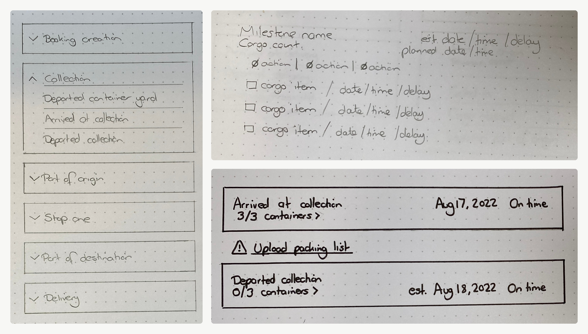
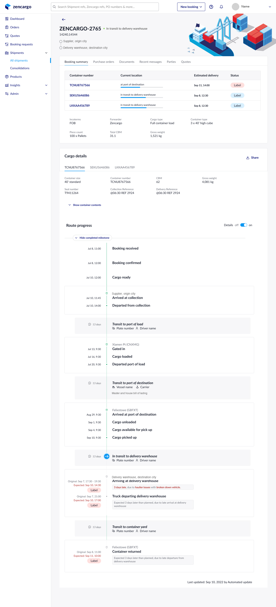

Zencargo · 2019 to 2023 · Design lead
A page level complaint about shipment status that turned out to be a modelling problem.
Zencargo is a digital freight forwarder. Its platform shows importers where their cargo is, what has happened to it and whether they need to act.
I led the design direction for a new visibility experience and moved the team from incremental UI fixes to a cargo centred model of the journey.
PM, engineering and domain experts adopted one shared cargo centred model, which became an early foundation for the company's digital twin direction. I left before full rollout, so I claim no shipped performance metrics.
The principal move was changing the success criteria from fixing a page to modelling the journey and getting three functions to sign up to it.
Zencargo's platform is live today. See it at zencargo.com.
Zencargo customers were frustrated by poor shipment visibility. In a fragmented logistics environment shaped by manual handoffs, changing routes and incomplete data, customers often could not tell where cargo was, what had happened or whether they needed to act.
What looked like a page-level UX problem was actually a deeper issue with how cargo journeys were modelled, structured and communicated. I led the design direction for a new visibility experience that shifted the team from incremental UI fixes to a more scalable, cargo-centred model, helping create an early foundation for Zencargo's broader digital twin strategy.
Customers were complaining because they lacked reliable visibility into shipment progress. The existing experience made it difficult to understand where cargo was, what stage it had reached and whether there was a problem worth investigating.
This was not just frustrating for customers. It also created pressure internally.
Leadership initially pushed for smaller improvements, but those would only have improved presentation, not the underlying quality of visibility.
Supply chains are messy. Cargo moves through multiple handoffs, documents are often exchanged manually and routes change in ways the system does not always capture cleanly.
At the same time, Zencargo was moving from a monolith toward microservices. That exposed a bigger constraint. The existing data model and information architecture could not accurately represent the complexity of real cargo journeys, especially around transshipments, exceptions and partial confirmations.
The challenge was not just to redesign a page. It was to create a model that was three things.
I led the design work across discovery, framing, concept development, testing and stakeholder alignment.

I owned four areas.
I also influenced product direction, success criteria, the service model and information structure and cross-team alignment as the scope expanded.
This was not limited to interface design. I helped shape how the team understood the problem, what we prioritised and what foundation we needed to build before the experience could genuinely improve.
Early research showed the issue was not simply clutter. The deeper problem was that the product was organised around the wrong unit of understanding.
Shipment and purchase order information was difficult to scan because the information architecture did not reflect how users actually reasoned about cargo movement and exceptions. Through research, journey mapping and collaboration with domain experts, I identified that cargo, not shipments or orders, needed to become the primary organising model.
That changed the direction of the work. Instead of forcing transshipment handling into the existing structure, I helped the team shift toward a cargo-centred model that could better represent route progress, milestones and exceptions.
Strategic outcome.
The team moved from local UI fixes to a more foundational redesign based on a clearer mental model.
The PM initially wanted to keep the scope small and work within the existing model. I pushed back, using research and service mapping to show that this would still leave customers with partial and misleading visibility.
This project produced more than a redesigned page.
That was the real value of the work. Not just a better interface, but a better model underneath it.
Outcome.
The team invested in a broader redesign that addressed the root problem rather than patching symptoms.
One of the most important trade-offs was choosing data confidence over apparent visibility.
We decided not to imply that cargo had progressed unless that event had been confirmed. Instead, the experience distinguished between what had been confirmed, what was expected next and where uncertainty remained.
This mattered because false certainty in logistics creates downstream risk.
Outcome.
The experience became more honest, more actionable and more defensible in a high-consequence environment.
Customers who bought the product often asked for a map. Research showed that day-to-day users found route status, exceptions and scannable text updates more useful than map-based visualisation.
I used that evidence to deprioritise the map and protect the team's focus on information that genuinely helped users make decisions.

Outcome.
We avoided spending time on a visually appealing but lower-value solution.
As the work developed, we realised the impact reached beyond one team. Multiple product teams were working on the same page and adjacent workflows, creating overlap, rework and conflicting changes.
We had to stop and restart several times as new dependencies surfaced. To stabilise progress, I helped introduce a review mechanism so impacted teams could be consulted and sign off on direction as the work evolved.
Outcome.
The project exposed ownership and coordination gaps. The governance approach helped reduce overlap and improve decision quality on a shared surface.
Because I left Zencargo before the work was fully rolled out, I am not claiming shipped performance metrics. The outcomes I can credibly stand behind are the decisions, alignment and foundations the work created.
Customer.
The proposed experience made cargo status easier to scan, easier to interpret and more trustworthy in ambiguous situations. Testing showed users responded better to clear status updates, route progression and exception signalling than to more decorative concepts like map-based tracking.
Product.
The team shifted from solving for transshipments as an isolated feature problem to solving for visibility as a broader modelling and information architecture problem.
Engineering.
The work gave engineering a clearer service definition and a more scalable model for representing real-world cargo movement.
Organisational.
The initiative aligned PM, engineering and domain experts around a shared cargo-centred model and exposed the need for stronger cross-team governance on shared surfaces.
Strategic.
This became an early foundation for Zencargo's digital twin direction by establishing a more reusable structure for milestones, route progress and operational visibility.
I left Zencargo before full rollout, so this case study focuses on the strategic decisions, cross-functional influence and foundational outcomes that shaped the work.
This project demonstrates how I work at a broader level than feature delivery alone. I did not just redesign a page. I identified the deeper problem beneath the interface, influenced the team to invest in a more durable direction, shaped a key product principle around trust and visibility and helped create a reusable foundation that extended beyond one release.
The skills this shows are service design, domain modelling, cross functional facilitation, research strategy and product strategy.
That is the kind of work I want to do more of, connecting user needs, product direction and systems-level thinking to create value that lasts.
The work I want to do more of is the work that connects user needs, product direction and systems level thinking. Zencargo is the clearest case I have of the three meeting on one problem. The user need was a trustworthy answer about where cargo was. The product direction was whether to patch a page or change the model underneath it. The systems level thinking was the cargo centred structure that made a trustworthy answer possible at all.
Value that lasts is the part I would still test for. What I would point to here is not the interface. It is the shared model, which became an early foundation for the digital twin direction rather than a fix for one release.
The principal move. I changed what success meant, from a fixed page to a modelled journey, then got product, engineering and the domain experts to build on the same model.
→ Full story and decisions in an interview